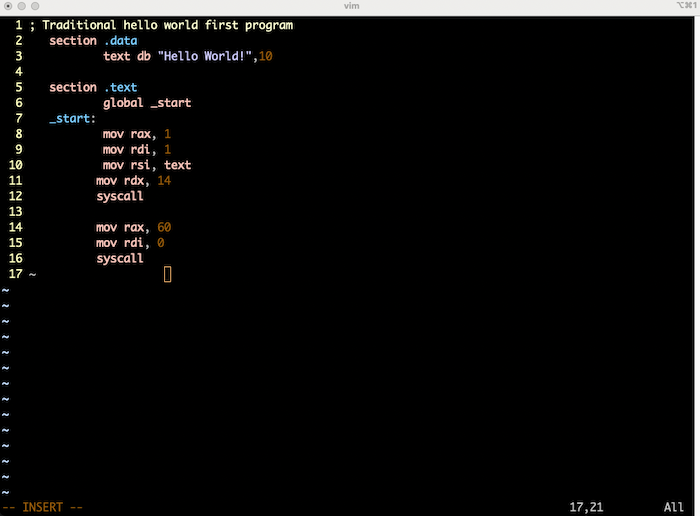

Assembler
Home
VIM
C
Some Quotes
About

This will be notes on x86 assembly language.
Using NASM assembler.
Using ld linker
Can also use Gnu Compiler suite
Delve a little into makefile
That's all for now.